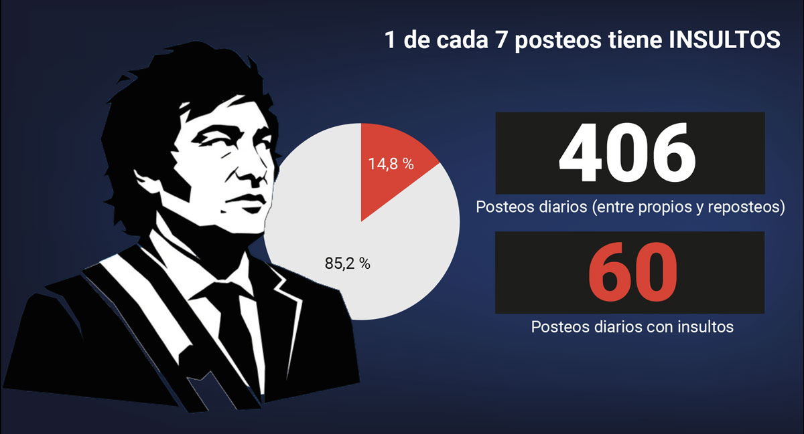
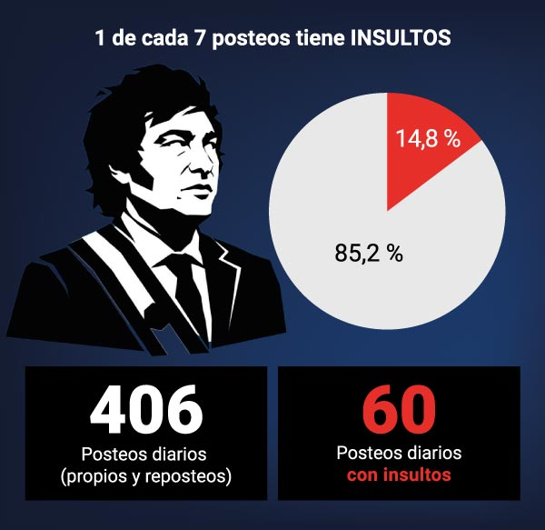
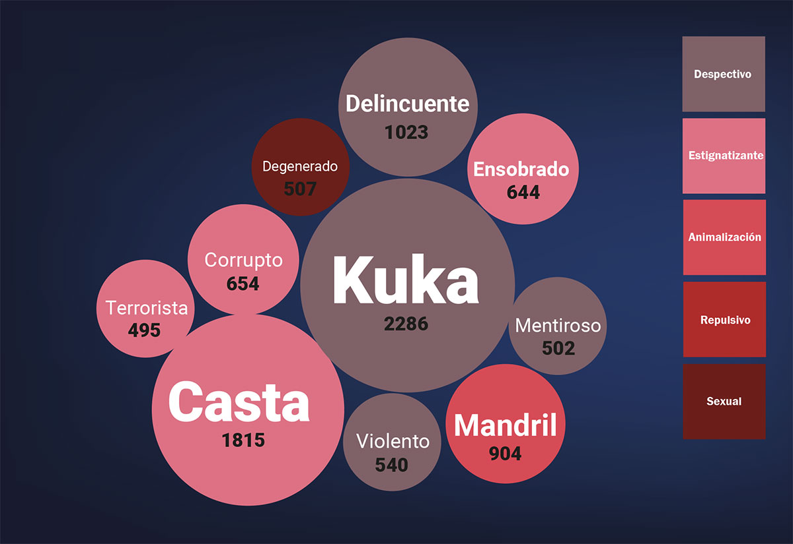
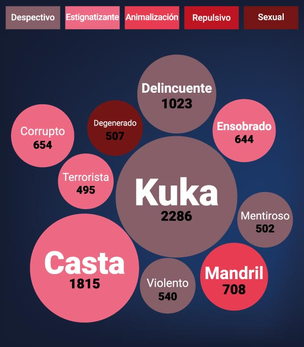
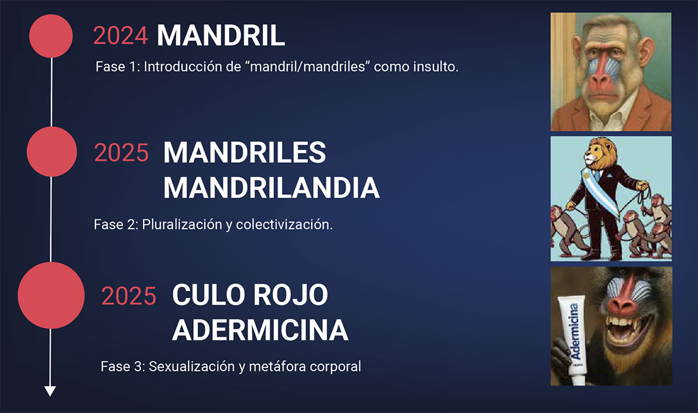
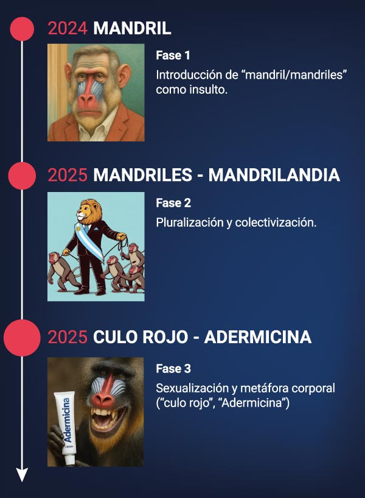

De la animalización
a la repulsión
Los insultos del presidente Javier Milei en X entre 2023 y 2025
La llegada de Javier Milei a la arena pública, primero como panelista televisivo y líder de opinión, luego como diputado nacional y finalmente como presidente, marcó el inicio de una forma de comunicación plagada de insultos hacia quien piensa diferente. Un equipo de DJV Bootcamp analizó 113.649 posteos para descifrar esta nueva estrategia. En agosto pasado el presidente aseguró que dejaría de insultar, pero esa promesa la cumplió sólo a medias.
Fecha
Existe un campo de batalla, las plataformas digitales, que no es nuevo, pero donde en los últimos años se ha observado una ola de ataques principalmente contra periodistas, organizaciones periodísticas, universidades, artistas, médicos y economistas. El insulto es el instrumento elegido por el presidente Javier Milei y algunos de sus seguidores más radicales.


Desde el 10 de diciembre de 2023 y hasta el 15 de septiembre de este año 2025, el presidente Javier Milei emitió 113.649 posteos (3.412 propios mientras que 110.237 fueron reposteos) en la red social X (exTwitter), de los cuales 16.806 contenían insultos hacia distintos blancos. El 15,2% de los tuits presentan ofensas de diferente tipo durante la primera mitad del mandato presidencial.
La costumbre de insultar en la red X por parte del presidente, tuvo una caída en el segundo semestre de este año. En agosto, Milei prometió que dejaría de insultar y aunque eso no sucedió, -como se detallará más adelante-, si podemos confirmar que en el mes de noviembre se redujeron a casi la mitad, con relación al mes en que se formuló la promesa.
Sobre la muestra de 16.806, esta producción de Data Journalism Visualization Bootcamp del Foro de Periodismo Argentino (FOPEA) identificó 271 insultos promovidos por Javier Milei, tal como se muestra en el gráfico inferior.
Categorización de insultos
Incluye menciones en tweets y retweets (10/12/2023 al 15/09/2025)
Del total de los 271 insultos, los 10 más citados por Milei en X fueron los siguientes:


- “kuka” (despectivo hacia el kirchnerismo), con 2.286 menciones
- “casta” con 1.815 menciones (en referencia no solo a la clase política que no comulga con las ideas presidenciales, sino también a todo aquel que se oponga a su plan de gobierno)
- “delincuente” con 1.023 menciones
- “mandril”, con 904 menciones (incluye derivados como mandrilandia)
- “corrupto”, con 654 menciones
- “ensobrado”, con 644 menciones, básicamente dirigido a periodistas
- “violento”, con 540 menciones
- “degenerado”, con 507 menciones
- “mentiroso”, con 502 menciones
- “terrorista”, con 495 menciones
En la anatomía del mensaje se observan varios ejes discursivos. Más de la mitad (54%) contienen adjetivos despectivos hacia otras personas o grupos (“inútil”, “mogólico”, etcétera), como expresiones verbales que buscan ofender. Asimismo se detectó contenido estigmatizante (“ensobrado”, “mentiroso”, “chorro”, etcétera). La estigmatización es un proceso social más amplio que apunta a etiquetar y marginar a un grupo de personas basándose en prejuicios, que fomentan la discriminación y la exclusión social.
En la muestra en estudio se detectó la presencia de tres patrones del lenguaje que en escenarios políticos anteriores no habían sido identificados como una tendencia constante y sobre los cuales discurren los insultos:
- La Animalización del lenguaje: "mandril", "domado", "burro", "rata", "cerdos", "gorilas", "parásitos", "plaga" (el primero es el más utilizado).
- La Sexualización: "vaselina", "envaselinados", "culo".
- Lo Repulsivo: "basura", "maloliente", "inmundicia", "putrefacto".
El asunto del "mandril" y sus derivados: Caso de estudio
El uso del término “mandril” y sus derivados (“mandrilandia”, “mandrilismo”, etcétera) como insulto hace referencia a un primate que pertenece a la familia de los monos y cuyas hembras tienen el trasero rojo. Esto es una característica distintiva llamada callosidad isquiática, que es un engrosamiento de la piel en sus nalgas. Es una muestra de disposición sexual. Los mandriles viven en las selvas tropicales de África, y son un ejemplo de dimorfismo sexual muy pronunciado.
Tanto la palabra “mandril” como sus derivados fueron ampliamente utilizados tanto por el presidente Milei como por sus seguidores.
La primera mención referida a mandril fue un retuit de Agarra la Pala @agarra_pala, del 19 de julio de 2024, a las 20:12 tal y como aparece en la captura de pantalla incorporada a continuación.
El post incluye un video de Milei entrevistado por el conductor Alejandro Fantino repitiendo la misma frase. Nótese aquí el uso de las mayúsculas, que en internet implica levantar la voz.
Algunos ejemplos de sus tuits y retuits
El uso de la palabra “mandril” en un tuit propio del presidente ocurrió a los pocos días: el 29 de julio de 2024, donde Milei le responde a un usuario.
La escalada en el uso de este término como insulto continuó no sólo en las palabras, sino también en la utilización de contenido gráfico. Se identificaron tuits y retuits con imágenes y videos generados con inteligencia artificial (IA) vinculados a mandriles. En varios casos, ese contenido aparecía aun cuando la palabra “mandril” no estuviera mencionada explícitamente en el texto.
El análisis de la cuenta del presidente Milei en X, desde que asumió hasta septiembre de 2025, reveló que mencionó “mandril” en 904 posteos, de los cuales el 90% fueron reposteos y sólo el 10%, contenido original.
El volumen de menciones que incluía el término “mandril” casi se triplicó al pasar de 201 publicaciones en 2024 a 594 en 2025. Este crecimiento supera significativamente el incremento promedio de contenido viral político esperado (30-50% anual) y evidenciaría una estrategia comunicacional sistemática que aprovecha algoritmos de amplificación. Las redes sociales suelen darle más visibilidad a los mensajes políticos que generan conflicto o muchas reacciones. Por eso, cuando un término como “mandril” crece casi un 200% en un año, no parece un aumento normal, sino un efecto de cómo los algoritmos empujan ciertos contenidos o de estrategias que aprovechan ese impulso. No hay una norma universal del 30-50% pero es lo que manifiestan algunos estudios en relación a los picos y las mesetas de viralización.
En el análisis de la utilización de “mandril” a lo largo del tiempo aparecen tres momentos clave: diciembre de 2024, y abril y mayo de 2025.
Porcentaje de tuits usando "mandril"
Estos repuntes coincidieron con los anuncios y la puesta en marcha de políticas que generaron amplio debate social y político, por ejemplo:
- En diciembre de 2024 se registraron 107 menciones (12%) coincidiendo con los anuncios de la “motosierra profunda”. La cronología muestra actividad concentrada entre el 12 y el 17 de diciembre, en clara correlación con la implementación del programa de austeridad definido por el propio Gobierno como el más agresivo de la historia argentina reciente.
- Los picos máximos se registraron en abril 2025 (132 tuits) y mayo de 2025 (124 tuits), coincidiendo exactamente con la eliminación del cepo cambiario anunciada el 11 de abril de 2025 y la implementación de reformas estructurales. En mayo de 2025 se observó una alta actividad con 122 menciones concentradas especialmente entre el 9-16 de mayo (72 en 8 días). Este período coincide con la consolidación de la 'Fase 3' de la motosierra y el endurecimiento de la política monetaria.
- Los datos muestran que el período enero-mayo 2025 concentró 386 menciones (43%), lo que se corresponde con la implementación de la Fase 3 del plan de estabilización económica.
Esta correlación temporal demuestra que las reacciones negativas en redes sociales funcionan como un termómetro inmediato de la percepción pública ante decisiones gubernamentales controversiales, con un patrón claro: a mayor impacto económico de las medidas, mayor volumen de insultos.


Durante estos tres períodos de medidas gubernamentales clave (diciembre 2024, abril-mayo 2025), el volumen de tuits hostiles aumentó el 249% respecto de la línea base, que es el promedio de menciones en períodos sin eventos extraordinarios. Los anuncios económicos de diciembre de 2024 generaron 107 menciones, mientras que las reformas de mayo 2025 produjeron 124, que son demostrativas de una sensibilidad comunicacional sostenida ante políticas de ajuste.
El fenómeno refleja la polarización digital del discurso político argentino, donde el insulto (“mandril”) se convirtió en herramienta de movilización y engagement particularmente efectiva en contextos de incertidumbre económica. La amplificación viral alcanzó el 89% mediante reposteos, demostrando que el lenguaje polarizante generó mayor impacto que el contenido neutral. La estrategia comunicacional agresiva demostró ser efectiva para la viralización de estos contenidos. El citado porcentaje se obtiene contando el número de retuits que contienen el término ‘mandril’ sobre el total de posteos que lo mencionan en el periodo analizado. Es decir, 89 de cada 100 menciones fueron reposteos, lo que muestra que la difusión fue mayormente por replicación más que por creación original de contenido.
Los cinco usuarios más activos (Milei: 92 tuits; @agarra_pala: 67; @laderechadiario: 48; @TommyShelby_30: 33; @Witchreinaa: 33) concentraron el 68% del volumen total de amplificación. Esta concentración excede los patrones normales de distribución en redes sociales, sugiriendo cierta coordinación en la amplificación viral del término “mandril”, con algunos perfiles que funcionan como principales propagadores del lenguaje polarizante y multiplicadores exponenciales del alcance del contenido agresivo.
El análisis revela un ecosistema viral altamente polarizado donde Milei actúa como el único detonante original con 92 menciones generadoras de contenido (100% originales), mientras una extensa red de 169 amplificadores especializados propagó masivamente el mensaje con un 89% de reposteos.
La red de amplificadores comprende 171 usuarios únicos (85% del total) con distribución fragmentada: 114 usuarios realizan 2-3 reposteos, 36 usuarios entre 4-10, y 21 usuarios entre 11-100. Esta diversificación de intensidades creó múltiples capas de amplificación que sostuvieron la viralidad y garantizaron resistencia ante posibles suspensiones de cuentas individuales.
El periodismo como blanco de ataques
Las formas del insulto van desde la descalificación personal (tildar de idiota a alguien) hasta la deslegitimación profesional, la acusación criminal (“son corruptos”), la deshumanización (“son basura”), la amenaza indirecta (“atenerse a las consecuencias”) y la incitación al ataque.
En el caso de los periodistas, el 70% de los tuits dirigidos a actores del campo mediático contienen términos despectivos o estigmatizantes. No es un comportamiento estático, ya que la figura presidencial, por su peso en sí misma, facilita la amplificación del mensaje. Cada mensaje activa un enjambre de cuentas que repiten, insultan y logran una escalada de difusión. El patrón es siempre el mismo. Como consecuencia, la autocensura ganó terreno: en algunos casos se volvió un mecanismo de defensa.
El precio del silencio es elevado. Aunque la libertad de expresión no muere de un día para otro, lo que ocurre es que se van apagando voces a modo de goteo.
La lista de periodistas y líderes de opinión atacados incluye al menos 44 colegas: Alejandro Alfie, Baby Etchecopar, Carlos Pagni, Delfina Celichini, Diego Cabot, Diego Leuco, Diego Sehinkman, Eduardo Anguita, Ernesto Tenembaum, Facundo Pastor, Florencia Donovan, Galia Moldavsky, Hugo Alconada Mon, Ignacio Ortelli, Iván Ruiz, Iván Schargrodsky, Ivy Cángaro, Jairo Straccia, Jesica Bossi, Jonathan Heguier, Jorge Asís, Jorge Fernández Díaz, Jorge Fontevecchia, Jorge Lanata, Jorge Rial, Juan Bracco, Julia Mengolini, Luciana Geuna, Luciana Peker, Luciana Rubinska, Luis Novaresio, Marcelo Bonelli, Marcelo Longobardi, María Laura Santillán, María O'Donnell, Mónica Gutiérrez, Natasha Niebieskikwiat, Pablo Duggan, Roberto Navarro, Romina Manguel, Silvia Mercado, Tamara Pettinato, Úrsula Vargues y Víctor Hugo Morales.
En la misma muestra los medios atacados fueron Ámbito Financiero, BAE Negocios, C5N, Clarín, Crónica, Diario Popular, El Cronista, El Destape, La Nación, La Política Online, Olé, Página/12, Perfil y Revista Noticias, entre otros.
Hay al menos 97 cuentas anónimas en X, que tienen desde unos pocos seguidores hasta casi medio millón. Y actúan instalando palabras clave o hashtags como #lostrollspagossonlosperiodistas y #NOLSALP (“No odiamos lo suficiente a los periodistas”). El objetivo es claro: penalizar la expresión crítica.
En agosto de este año, el presidente dijo: "voy a dejar de usar insultos, a ver si están en condiciones de poder discutir ideas".
Efectivamente, del análisis de tuits y retuits del presidente Milei, que incluyen al menos un insulto, se observa en la progresión mensual que la mayor cantidad se dió en mayo de 2025, con 956 tuits y retuits. En agosto, el mes de la promesa, se contabilizaron 522 y en noviembre, último mes de datos disponibles, 278. Es un descenso porcentual del 47% con relación al mes de agosto. Es decir, no cumplió la promesa de dejar de insultar, pero esa conducta se redujo a casi la mitad.
Tal como se observa en el gráfico y luego comienza a descender: de 10,6% en el citado mes a 5,8% en noviembre pasado. En números del 48%. No dejó de insultar, tal como prometió, pero redujo a casi la mitad la cantidad de insultos.
Responsabilidad de las plataformas
El auge de narrativas extremistas y divisorias en el entorno digital genera un escenario inquietante para la confianza en las instituciones y la cohesión social. El control de estos entornos por parte de oligopolios tecnológicos con escasa regulación estatal ha favorecido la propagación de desinformación, noticias falsas y teorías conspirativas que empantanan el debate público democráctico con confusión y engaños.
El valor de los datos de usuarios ha crecido, permitiendo el seguimiento automático de actividades individuales, la creación de perfiles y la personalización de la entrega de contenido. Acelerado por la IA, este proceso ha otorgado a los conglomerados digitales un poder económico e influencia sin precedentes en poco tiempo. Se trata de una de los mayores desafíos para la democracia contemporánea.
X y la “enshittificación”
“Mentir constantemente no tiene como objetivo hacer que la gente crea una mentira, sino garantizar que ya nadie crea en nada. Un pueblo que ya no puede distinguir entre la verdad y la mentira no puede distinguir entre el bien y el mal. Y un pueblo así, privado del poder de pensar y juzgar, está, sin saberlo ni quererlo, completamente sometido al imperio de la mentira. Con gente así, puedes hacer lo que quieras." (Hannah Arendt)
La “enshittificación” (proviene de “shit”, “mierda” en castellano: también se traduce como “mierdificación”) es una palabra popularizada por el bloguero, periodista y autor de ciencia ficción canadiense Cory Doctorow (@doctorow en X). Doctorow, quien publicó el libro “Enshittification”, alerta sobre la pérdida de calidad de los productos y servicios online. Según su análisis, las plataformas pasaron por varias etapas: inicialmente ofrecieron servicios de alta calidad para atraer usuarios; luego cambiaron para favorecer a los clientes comerciales y aumentar su rentabilidad y, finalmente, se centraron en maximizar las ganancias para los accionistas de las plataformas a expensas tanto de los usuarios como de los clientes comerciales. Este proceso resultó en un deterioro significativo de la experiencia del usuario.
El término se aplicó a los cambios de Twitter (luego X) tras su adquisición en 2022 por parte del magnate Elon Musk. Esto incluyó el cierre de la API del servicio para detener el uso de software interoperable; la suspensión de usuarios por publicar identificadores de Mastodon (servicio rival) en sus perfiles y la imposición de restricciones a la capacidad de ver el sitio sin iniciar sesión, que luego revirtió.
Cerrar una API es como cortar el puente de comunicación entre un servicio (como una app de mapas) y otro software (como una app de delivery), impidiendo que se pasen datos y funciones; esto rompe la interoperabilidad, haciendo que el software que dependía de esa conexión deje de funcionar o pierda capacidades, afectando a los usuarios y obligando a buscar alternativas.
Otros cambios incluyeron límites de tarifas temporales para el número de tuits que podían verse por día, la introducción de suscripciones pagas al servicio en forma de Twitter Blue y la reducción de la moderación.
Musk modificó el algoritmo para promocionar sus propias publicaciones por encima de otras, lo que provocó que los feeds de los usuarios se inundaran con su contenido en febrero de 2023. El aumento del discurso de odio en la plataforma considerada uno de los principales foros globales de discusión pública digital, en particular el antisemitismo y la islamofobia durante la guerra entre Israel y Hamas, llevó a que algunas organizaciones retiraran anuncios de la plataforma.
Cómo pararse ante los insultos
Contrarrestar los discursos de odio basados en insultos en las redes sociales implica una combinación de estrategias proactivas y reactivas para fomentar un ambiente digital seguro y respetuoso.
Es un nicho: X tiene 7 millones de usuarios en la Argentina donde hay 35 millones de electores. El alcance de los trolls está pendiente de medición, pero en modo alguno puede tener una penetración mayor del 20% de los electores.
Existe el consenso de que los métodos de siempre no sirven para abordar este clima de polarización e insultos. Si la metodología de comunicación cambia, hay que cambiar la forma de encararla. A continuación se presenta una serie de sugerencias, algunas de las cuales fueron propuestas por Naciones Unidas:
Las 15 recomendaciones
- Mantener la calma: los insultos buscan la reacción y el enojo. Es importante neutralizar el efecto.
- No interactuar con cuentas anónimas. El anonimato puede tener su sentido en ambientes donde impera la censura, pero lo ideal es que la comunicación se dé entre personas que se identifican correctamente.
- Evitar informar sobre la actividad de cuentas anónimas en los medios de comunicación.
- No arrobar ni dar RT ni citar a las cuentas que insultan porque se amplifica el efecto.
- Evitar la descalificación. No al insulto siempre porque eso implicaría consentirlo como forma de comunicación pública.
- Investigar a los trolls y a su aparato de propaganda.
- Más periodismo de investigación, más periodismo de datos.
- Cubrir la agenda de la gente y no la agenda del Gobierno.
- Hacer uso de los pedidos de acceso a la información pública para entender cómo funciona el Gobierno en todos los campos, incluida la comunicación pública.
- Informar y educar a los usuarios sobre los efectos negativos del discurso de odio y cómo identificarlo.
- Fomentar la reflexión crítica sobre la información consumida y compartida en redes sociales.
- Compartir contenido que celebre la diversidad, la inclusión y el respeto hacia todas las personas.
- Aprovechar las funciones de moderación de las plataformas para filtrar y eliminar el discurso de odio y los insultos de manera efectiva.
- Utilizar las opciones de denuncia de las plataformas para informar sobre mensajes y usuarios que propagan el odio.
- Empoderar y acompañar a las personas que han sido afectadas por el discurso de odio, ofreciéndoles apoyo emocional y práctico.